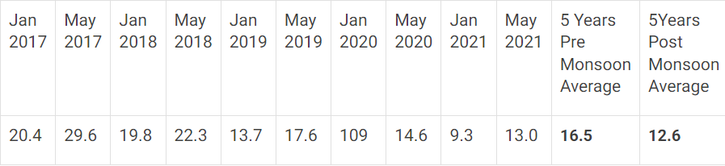

The North western part and the Southern part of the Coimbatore is occupied by hill ranges of Western Ghats, namely Nilgiris hills on the North-West and Anamalai hills on the South. The most part of the district forms parts of Cauvery river basin where as the South western part of the district comes under Ponnani River basin. The major river courses which come under Cauvery basin are Bhavani, Noyil and Amaravathi. The South western part of the district is drained by tributaries of Ponnani, namely Palar, Aliyar and uppar originating from Anamalai hills.
The Ground Water levels from the 39 number of observation wells of TWAD have been analysed for Post-Monsoon and Pre-Monsoon. 5 years average Ground water level in m Below Ground Level for pre and post monsoon is as follows:

The app will implement a robust user authentication system to ensure secure access.
Different roles, including administrators, city officials, and general users,
will be defined with varying levels of access and permissions.
Sign up or request a demo of KovaiWaterz now.
Highlight the secure login and access system for users.
Detail the functionality allowing changes to be made to the water network. Showcase the real-time data monitoring capabilities of KovaiWaterz.
Sign up or request a demo of KovaiWaterz now.
"KovaiWaterz has revolutionized the way we manage our city's water supply. It's efficient, user-friendly, and has made a significant impact on our daily operations."
- City Official
KovaiWaterz employs state-of-the-art encryption techniques to ensure the security of your data. We prioritize the privacy and confidentiality of your information.
Yes, KovaiWaterz provides real-time editing capabilities, allowing you to make changes to the water network as needed. It's a flexible and dynamic solution.
Have questions or need more information? Contact us now!